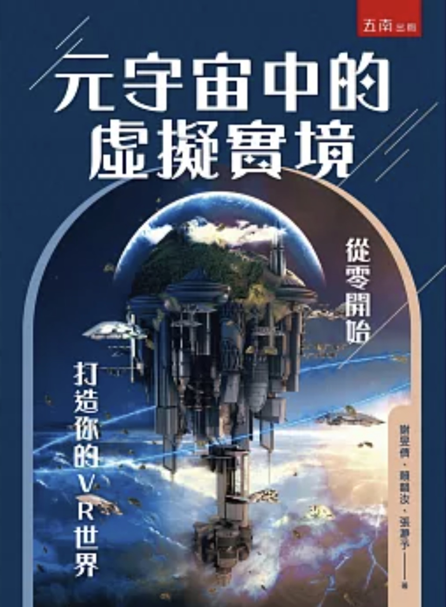
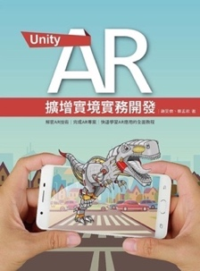
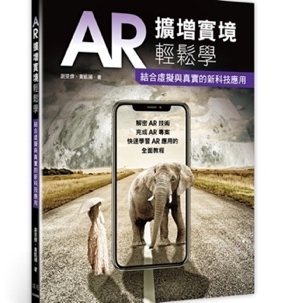
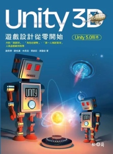

01
教員研修・授業への活用
AI の授業活用と教員研修
授業の課題を起点に、生成 AI を使って指導案の発想、教材整理、スライド作成、評価設計に取り組み、問いかけ・検証・修正を実践します。
- ChatGPT／Gemini の授業活用
- プロンプト設計と情報の検証
- 授業準備と学習活動への AI 導入
個人サイト / 研究・教育・実践
TAINAN, TAIWANMIN-CHAI HSIEH, Ph.D.
台南応用科技大学マルチメディア・アニメーション学科 准教授
AI と XR で、研究と教育をつなぐ。デジタル技術を学習とインタラクションデザインに活用する方法を探究しています。
183 回招待講演・ワークショップ
6 冊XR・ゲームデザインの著書
複合現実・拡張現実・仮想現実科学教育と実践
01 TALKS & WORKSHOPS
対話を通して、研究と授業実践を共有する。
講演、教員研修、ワークショップを通じて、AI・XR・デジタル学習の活用経験を共有し、さまざまな教育現場の教員や学生と交流しています。
教員研修・授業への活用
授業の課題を起点に、生成 AI を使って指導案の発想、教材整理、スライド作成、評価設計に取り組み、問いかけ・検証・修正を実践します。
教員・高校生・大学生
ゲームのアイデアを出発点に、AI との協働と Web プログラミングを通じて、インタラクションの仕組み、画面設計、作品公開の流れを学びます。
科学教育・分野横断型の教員研修
授業場面と研究事例から AR・VR・MR を理解し、抽象概念、空間理解、操作手順をインタラクティブ教材にする方法を考えます。
デジタルメディア・教員と学生のワークショップ
仮想空間、インタラクティブな案内、教育メタバースの事例をもとに、内容の企画から学習場面の設計まで、コンテンツと学習活動のつながりを考えます。
SELECTED TALKS
AI の授業活用や没入型の授業から、
医療・看護教育、芸術・デザインまで。
台南市私立港明高級中学
国立台南高級商業職業学校
台南市官田区嘉南小学校
国立成功大学医学部看護学科
国立嘉義大学視覚芸術学科・大学院
2025 テクノロジーと教育動向シンポジウム
2009—2026 年、183 回の交流。年・テーマ・学校名で検索できます。
以下は実施形式の例です。内容は活動の目的に合わせて調整します。
動向紹介、活用事例、参加者との意見交換。
段階的なデモ、操作実習、ディスカッション。
参加者の経験や利用機器に応じたテーマ別実習。
IN THE MEDIA
XR を用いた授業、科学教育、研究実践を紹介。
国科会「人文．島嶼」
AR 絵本と VR シミュレーションを組み合わせたセーリング教材や、小学校教員と共同で海洋教育の授業を計画した経験を紹介。
古都ラジオ FM102.5
司会の劉采妮氏に招かれ、学生とともに、国科会の科学教育実践研究や産官学連携プロジェクトの成果を紹介。
中央放送局 Rti
司会の楊雲鵬氏に招かれ、国科会の科学教育実践分野と研究プロジェクトの成果を紹介。
02 ABOUT
謝旻儕（Min-Chai Hsieh）は、国立台南大学デジタル学習科技学科で博士号を取得し、現在は台南応用科技大学マルチメディア・アニメーション学科の准教授を務めています。2025 年度の教員評価優秀教員表彰と、2026 年度の優秀人材招聘・定着促進の奨励を受けました。教育部の 2026 年「AI 人材方舟計画」「没入型技術によるコンピテンシー重視の授業推進計画」、および 2026 年度「高等学校におけるテクノロジーを活用した自律学習・デジタル授業推進計画」の指導教員を務めています。これまで小中学校デジタル学習向上プログラムの学校支援や、5G 新技術学習モデル校計画の指導・審査に携わりました。2016 年には国立屏東大学の優秀卒業生表彰、2020 年度には台南応用科技大学の学部優秀教育教員表彰を受けています。
主な研究分野は、AI の活用、デジタル学習、XR（複合現実・拡張現実・仮想現実）、教育メタバース、インタラクションデザインです。XR 技術とデジタルメディアの設計を組み合わせ、さまざまなコンテンツへの応用に取り組んでいます。招待講演とワークショップはこれまでに計 183 回。学会発表・学術誌論文は 70 編以上で、SSCI・SCIE・EI 収録論文を含み、国際学術誌の査読も担当しています。
著書は 6 冊で、『メタバースの中の VR：ゼロからつくる自分だけの VR 世界』（2025 年 4 月）、『メタバースをめぐる AR：現実と仮想をつなぐ新しい技術』（2023 年 3 月 25 日）、『Unity による AR 実践開発』（2021 年 10 月 4 日）、『やさしく学ぶ AR：現実と仮想を組み合わせた新技術の活用』（2021 年 7 月 23 日）、『AR を楽しもう！現実と仮想を組み合わせた新技術の活用』（2016 年 8 月 23 日）、『ゼロからはじめる Unity 3D ゲームデザイン』（2015 年 8 月 27 日）があります。いずれも繁体字中国語で出版されており、ここでは日本語の参考訳を示しています。AI を取り入れたデジタルメディアのインタラクション設計、デジタル教材設計、VR・AR の実践的活用に取り組んでいます。
デジタル学習科技学科 博士
2008–2013
デジタル学習科技学科 修士
2006–2008
研究・教育
教育革新部門
小児腎代替療法の MR インタラクティブ学習研究
国科会の研究奨励助成を受給
AR ボードゲームによる中学校歴史学習の研究を指導し、科技部創作賞を受賞
科技部人文司（科学教育分野）
03 RESEARCH
全 18 件
METAVERSE × NURSING
適応型対話と共同調整活動を取り入れたメタバース環境を構築し、看護場面における感情調整と心理的レジリエンスを研究。
MIXED REALITY × HEALTHCARE
医療用救急カートの MR 訓練システムを開発。操作場面をインタラクティブに再現し、システム評価と臨床現場への普及に取り組む。
AI × TEACHING PRACTICE
VR と AI による学習支援アシスタントを構築して VR 実習科目に導入し、教育実践研究を通じて学習成果を検証。
XR × TEACHER DEVELOPMENT
XR・AI・仮想キャラクターによるデジタル表現を組み合わせ、ツールの操作から授業への活用まで扱う教員向け産業研修を企画。
METAVERSE × CIVICS
高校の公民・社会科向けに、仮想空間と役割参加を組み合わせた模擬法廷学習システムを開発し、授業への活用を研究。
VIRTUAL REALITY × WELLBEING
空間探索、芸術制作、身体活動を組み合わせた VR 体験を設計し、Z 世代の学生の不安に対する芸術活動の活用を研究。
CHATBOT × AR DEVELOPMENT
マルチメディア・アニメーション学科の AR 実習科目で学習支援チャットボットを設計し、授業の進行支援と学習への活用を研究。
MIXED REALITY × NURSING
医療・看護の操作場面を取り入れ、小児持続的腎代替療法の MR 学習システムを開発し、評価と普及に取り組む。
VIRTUAL REALITY × PRACTICE
産業連携型の授業と実習を通して VR コンテンツの設計を学び、教員・学生の実務能力とインタラクティブコンテンツ開発をつなぐ。
VIRTUAL REALITY × SCIENCE
電気と磁気を題材に VR 教材を開発し、授業での実践を通じて、科学概念を操作できる学習場面として表現。
VIRTUAL REALITY × OCEAN
VR と海洋教育を組み合わせた OP 級ヨット学習システムを開発し、没入体験を通じてヨットと海を学ぶ。
AR × LEARNING PLATFORM
AR 実習科目の学習プラットフォームを構築。教材と操作ガイドを整備し、教育現場での活用を研究。
VIRTUAL REALITY × NURSING
出生直後の新生児看護技術を VR の模擬場面として再現し、看護技術教育への活用を研究。
AUGMENTED REALITY × HEALTHCARE
AR と医療・看護教育を組み合わせ、救急カートに関する教材と授業を設計し、専門知識や操作手順の提示方法を探究。
XR × OCEAN EDUCATION
OP 級ヨットを題材に AR・VR を組み合わせた海洋教育の授業を設計し、現実と仮想を統合した教材の活用を探究。
AUGMENTED REALITY × OCEAN
カキを題材に AR 教材を開発し、海洋生物の知識を観察・操作できる学習コンテンツとして表現。
AUGMENTED REALITY × ENVIRONMENT
AR 教材と大気質モニタリングの仕組みを組み合わせ、大気汚染に関する環境教育と日常生活への応用を検討。
INTELLIGENT TUTORING × AR
インタラクティブ教材と学習ガイドを組み合わせた AR 学習システムを開発し、評価・分析を実施。
博物館の体験型展示、デジタルコンテンツ、VR 訓練まで。
2016–2025 年・主な連携 7 件2025
マルチメディアを用いたインタラクティブ展示の設計・開発。
2024
ブランド紹介映像の企画・撮影。
2024
メタバース空間とデジタルコンテンツの設計。
2023
手術室の火災を想定した避難訓練システムの開発。
2019
デジタルアーカイブ・学習センター向け VR コンテンツの開発。
2017
桃園空港のモバイルミュージアム特別展における AR 体験の設計。
2016
モバイルミュージアムの AR 体験の設計・企画。
問いの探索からインタラクション設計、システム開発まで、学生が研究を進める過程を指導。
2019–2026 年度・9 件の研究計画・指導教員：謝旻儕2026–2027 年
ウェアラブル生体フィードバックを組み合わせた没入型 VR 感情調整システムを開発。
2025–2026 年
AR と VR を組み合わせ、四草マングローブ湿地の生態を学ぶ絵本を設計。
2024–2025 年
AR とインタラクティブ布絵本を用いて、子どものトラウマに配慮したデザインを探究。
2023–2024 年
AR とアートセラピーを組み合わせた絵本の設計・評価。
2022–2023 年
AR と易経を組み合わせたボードゲームの制作・評価。
2022–2023 年
ウイルスと細菌をテーマにした AR パズルブロックと絵本の設計。
2021–2022 年
風水学習における AR の実践的活用。
2020–2021 年
清朝統治期を題材に、中学校の歴史授業での AR ボードゲーム活用を研究。
2019–2020 年
遠隔地域の子ども向け教育映像、3D モデル編集、ソフトウェア制作。
XR 機器、医療・看護学習、科学教育の教材の設計・開発。
特許・実用新案・査定済みの特許出願MR × 医療・看護教育
VR × モバイル機器
AR × ホログラフィック投影
立体教材 × 科学教育
04 BOOKS
書籍はすべて繁体字中国語版です。日本語の書名は参考訳です。

ゼロからつくる自分だけの VR 世界
Books.com.tw（新しいタブで開く）現実と仮想をつなぐ新しい技術
Books.com.tw（新しいタブで開く）
AR の活用と開発
誠品オンライン（新しいタブで開く）
現実と仮想を組み合わせた新技術の活用
誠品オンライン（新しいタブで開く）現実と仮想を組み合わせた新技術の活用
金石堂（新しいタブで開く）
ゲームデザインとインタラクティブ制作
誠品オンライン（新しいタブで開く）05 TEACHING & PRACTICE
概念を理解し、自分の手でつくる。
XR コンテンツ開発、インタラクティブメディア、AI の活用、プログラミングを扱い、操作実習とプロジェクト制作を組み合わせています。教員研修では授業の課題を出発点に、ツールの使い方とデジタル教材の設計方法を共有します。
AR 実習、VR 実習、AR／VR の設計・制作、インタラクティブマルチメディアデザイン。
AI リテラシーと活用、人工知能入門、Python・Web プログラミング、情報セキュリティ。
デジタル学習、AR／VR の授業導入、生成 AI の授業活用、XR による現実・仮想の統合とデジタル教材設計。
06 CONTACT
shiehminchai@gmail.com
台南応用科技大学
マルチメディア・アニメーション学科